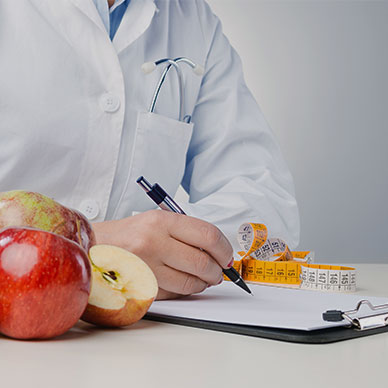

INFRA
서브큐의 인프라는 식품 안전성과 전문성을 위해 노력하고 있습니다.
-
 물류시스템
물류시스템서브큐는 선진화된 물류시스템으로
물류시스템자세히 보기
고객분들께 식자재를 안전하게
공급하고 있습니다 -

식품안전센터
한발 앞선 엄격한 식품위생관리를
식품안전센터자세히 보기
위해 식품안전센터가 최선을
다하고 있습니다. -
 식품연구소
식품연구소고객에게 차별화 된 가치 제공과
식품연구소자세히 보기
경쟁력 우위의 신제품 개발을
위해 노력하고 있습니다.